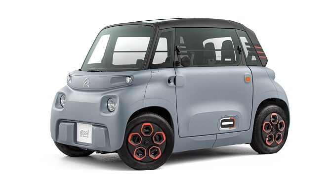

Batterie & energia
Considerazioni Auto Elettrica (a batterie)
Che fare, compro, noleggio o aspetto? di R.Chirio
Considerazioni
Aprile 2022 /gennaio 2025
Premessa, ho lavorato molti anni nel gruppo Fiat, sia nella progettazione elettronica dispositivi automotive che sul campo come ispettore di officina, ho quindi buone conoscenze della componentistica e tecniche motori termici ed elettrici. Posso pertanto concedermi alcune considerazioni e idee sull'auto elettrica....
Tipologie di auto Ibride ( doppio motore, motore endotermico + motore elettrico con batterie):
- - Mild Hybrid ovvero Ibrida leggera come la Panda o i modelli Suzuki
- - Full Hybrid ovvero Ibrida di maggiore complessità e autonomia vedi le varie Toyota
- - Plug-in Hybrid ovvero Ibrida con possibilità di ricarica a presa di corrente, vedi Audi, BMW, Volkswagen
A cosa servono? Fondamentalmente a entrare e uscire dalle Città, dove esistono limitazioni alla circolazione a motore endotermico, in pratica sono automobili, costose, con elettronica complessa, poco affidabili e a consumo elevato (mentre si viaggia a motore termico, carica anche le batterie), perdono valore quando si vendono, e costa moltissimo sostituire le batterie ....sono la transizione verso l'automobile elettrica....NON SONO DA ACQUISTARE, noleggiatele per 6 mesi e poi deciderete se tenerla o sostituirla!!!!
- Full Electric
E' l'auto che viene progettata per essere elettrica, cioè non è un adattamento o trasformazione di veicoli esistenti. Nasce cioè con una precisa idea di come sistemare motore, batterie e elettronica di controllo.
LA PIU' PICCOLA (6000€)

La Full Electric AMI con motore da 6KW e autonomia da 70Km. (Forse un po troppo piccola!!!)
LA PIU' CONOSCIUTA (54000€)

La Full Electric TESLA model 3 con motore da 360KW e autonomia da 550Km. (Forse un po troppo grossa e costosa)
Che cosa hanno in comune le due auto elettriche sopra? .....
Quanto dura il telaio....20 anni almeno, quanto durano i motori elettrici 20 anni almeno, quanto durano gli inverter e controlli elettronici di bordo 10-20anni.............quanto durano le batterie?...forse 5 anni!!!
La Batteria installata fissa è costosa e difficile da sostituire (nel caso della Tesla vale il 30% del costo dell'auto nuova), avere la batteria sistemata dentro l'auto, è un grave sbaglio di progettazione..... la Batteria è un componente di consumo e deve poter essere sostituita facilmente e velocemente, così come si cambiano le gomme e le pastiglie freni. E' un concetto sbagliato quello di fermarsi per fare ricarica, ci va molto tempo per una ricarica media, e le ricariche veloci danneggiano le batterie.
L'auto elettrica avrà successo quando si useranno pacchi standard contenenti le batterie, il pacco standard dovrà avere il contenitore e connessioni uguali tra tutte le auto, dovrà avere una slitta per facile e veloce inserimento (un po come avviene per talune e-bike) e tale pacco in numero di 4-8 fornirà l'energia all'auto. (Auto di prestigio, più slot disponibili per maggiore potenza)
Le auto dovranno essere vendute senza batteria, mentre le batterie saranno l'elemento da noleggiare, noleggiare da chi adesso vende Benzina, per Esempio AGIP-ENI, Api-IP, Q8 o altri distributori. Sono loro che fra qualche anno, esaurite le scorte di carburante dovranno fornire le batterie cariche da montare al volo negli appositi slot sotto ai sedili, appunto elementi aggiuntivi come il carburante..........
Le batterie ricaricabili, sono ancora in continuo miglioramento e lo saranno per molti anni, diciamo che ogni 2-3 anni si raddoppia la capacità a parità di peso, pertanto la tipologia di batteria singola, verrà aggiornata continuamente, a tutto vantaggio del consumatore, tali celle verranno sempre montate all'interno del pacco standard che con il tempo aumenterà la potenza accumulata, ma sarà, appunto sempre compatibile con gli slot di vetture più vecchie, la vettura di 10 anni prima con i nuovi pacchi non può che trarne vantaggi di autonomia e prestazioni...
L'auto elettrica, venduta senza batterie può prendere un prezzo molto competitivo, considerando appunto di avere una durata di 20 anni, con pochissima manutenzione, solo appunto i costi di sostituzione per consumo di gomme, pastiglie freni, spazzole tergivetro e poco altro..... mentre le batterie saranno garantite da chi le noleggia... non sono un problema per il conducente, vengono cambiate ogni volta che andate dal distributore non più di carburante ma di batterie. Alla fine quando il ciclo è ben avviato non servirà più la ricarica domestica.
Continua....
Dopo varie email che ho scambiato con chi mi ha scritto, posso dire che alla fine del 2024 le vetture di tutti i tipi con motore elettrico non hanno un grande mercato, il pubblico ha bocciato le vetture ibride e ancora di più quelle elettriche pure. I costi di acquisto sono troppo alti come pure la gestione. Le vetture ibride oltre al prezzo di acquisto alto hanno pure dei costi di gestione e tagliando ingiustificati, insostenibili da chi si è già svenato per 25-30000€ sull'acquisto del nuovo, va a pagare dai 500 ai 1700€ anno per un tagliando necessario per restare nei 5-8 anni di garanzia. Prezzi inaccettabili per una famiglia normale..........molto meglio restare su una vettura termica, meglio se Diesel...........costa molto meno fare una normale riparazione e cambio dei consumabili come olio, filtri, gomme da una piccola officina meglio se conduzione familiare dove è possibile parlare con il meccanico. Eviterei più possibile le grosse filiali e concessionarie hanno troppi costi che ribaltano sui clienti. Ancora meglio per chi lo sa fare, cambiare olio e filtri da soli si spende pochissimo acquistando on-line. Il costo più alto è la sostituzione gomme che purtroppo bisogna fare dal gommista per via della equilibratura. si possono comunque acquistare pneumatici on-line a costi bassi.
Consiglierei la vettura elettrica pura Full Electric solo a chi ha possibilità di ricarica casalinga con impianto solare fotovoltaico, troppo caro fare la ricarica dalle colonnine. Gli incentivi dovrebbero darli innanzitutto a chi dimostra di fare ricarica solare, così da non sovraccaricare la rete elettrica nazionale.
Vetture cinesi sono molto più economiche con bassi costi di acquisto e manutenzione. Si stanno sviluppando nuove tipologie di batterie e qualcuno sta pensando di usare batterie estraibili.....
Continua...
© Roberto Chirio: all rights reserved.